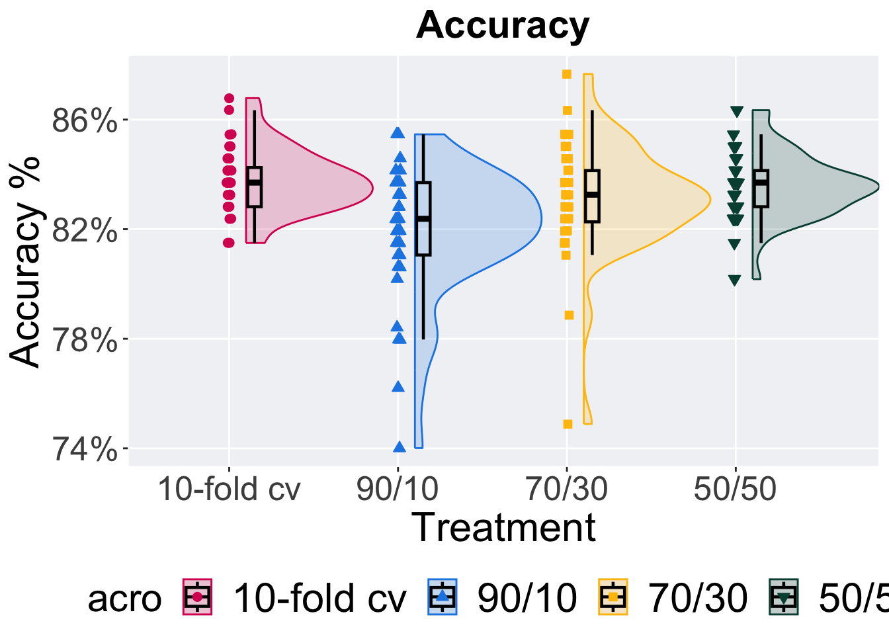

Chapter 2 Accuraccy results
Here we report the accuracy for final pipeline returned from a TPOT2 run on each OpenML task. 40 replicates were conducted for each evaluation strategy explored.
2.2 Accuracy per OpenML task
Accuracy of the returned pipeline from an evolutionary run.
2.2.1 Task 167104
filter(scores, taskid == task_id_lists[1]) %>%
ggplot(., aes(x = acro, y = accuracy, color = acro,
fill = acro, shape = acro)) +
geom_flat_violin(position = position_nudge(x = 0.1, y = 0),
scale = "width", alpha = 0.2, width = 1.5) +
geom_boxplot(color = "black", width = .08, outlier.shape = NA, alpha = 0.0,
size = 0.8, position = position_nudge(x = .15, y = 0)) +
geom_point(position = position_jitter(width = .015, height = .0001),
size = 2.0, alpha = 1.0) +
scale_y_continuous(
name = "Accuracy %",
breaks = c(.74, .78, .82, .86),
labels = scales::percent
) +
scale_x_discrete(
name = "Treatment"
) +
scale_shape_manual(values = SHAPE) +
scale_colour_manual(values = cb_palette, ) +
scale_fill_manual(values = cb_palette) +
ggtitle("Accuracy") +
p_theme
Summary statistics for the generation a satisfactory solution is found.
performance <- filter(scores, taskid == task_id_lists[1])
performance %>%
group_by(acro) %>%
dplyr::summarise(
count = n(),
na_cnt = sum(is.na(accuracy)),
min = min(accuracy, na.rm = TRUE),
median = median(accuracy, na.rm = TRUE),
mean = mean(accuracy, na.rm = TRUE),
max = max(accuracy, na.rm = TRUE),
IQR = IQR(accuracy, na.rm = TRUE)
)## # A tibble: 4 × 8
## acro count na_cnt min median mean max IQR
## <fct> <int> <int> <dbl> <dbl> <dbl> <dbl> <dbl>
## 1 10-fold cv 40 0 0.815 0.837 0.838 0.868 0.0143
## 2 90/10 40 0 0.740 0.824 0.819 0.855 0.0264
## 3 70/30 40 0 0.749 0.833 0.831 0.877 0.0187
## 4 50/50 40 0 0.802 0.837 0.836 0.863 0.0132Kruskal–Wallis test illustrates evidence of statistical differences.
##
## Kruskal-Wallis rank sum test
##
## data: accuracy by acro
## Kruskal-Wallis chi-squared = 21.695, df = 3, p-value = 7.55e-05Results for post-hoc Wilcoxon rank-sum test with a Bonferroni correction.
pairwise.wilcox.test(x = performance$accuracy, g = performance$acro,
p.adjust.method = "bonferroni",
paired = FALSE, conf.int = FALSE, alternative = "t")## Warning in wilcox.test.default(xi, xj, paired = paired, ...): cannot
## compute exact p-value with ties
## Warning in wilcox.test.default(xi, xj, paired = paired, ...): cannot
## compute exact p-value with ties
## Warning in wilcox.test.default(xi, xj, paired = paired, ...): cannot
## compute exact p-value with ties
## Warning in wilcox.test.default(xi, xj, paired = paired, ...): cannot
## compute exact p-value with ties
## Warning in wilcox.test.default(xi, xj, paired = paired, ...): cannot
## compute exact p-value with ties
## Warning in wilcox.test.default(xi, xj, paired = paired, ...): cannot
## compute exact p-value with ties##
## Pairwise comparisons using Wilcoxon rank sum test with continuity correction
##
## data: performance$accuracy and performance$acro
##
## 10-fold cv 90/10 70/30
## 90/10 0.00016 - -
## 70/30 0.41651 0.08840 -
## 50/50 1.00000 0.00111 1.00000
##
## P value adjustment method: bonferroni